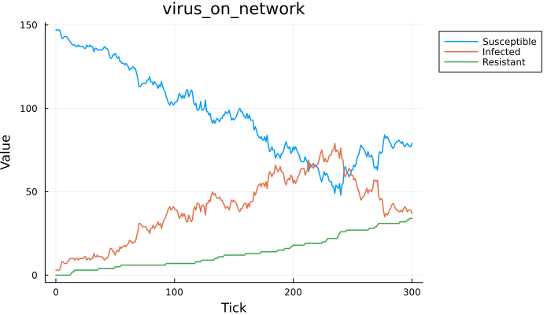
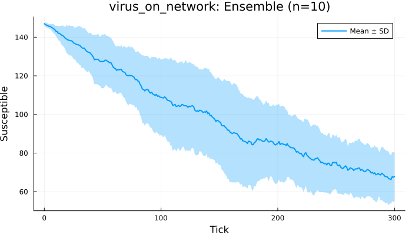
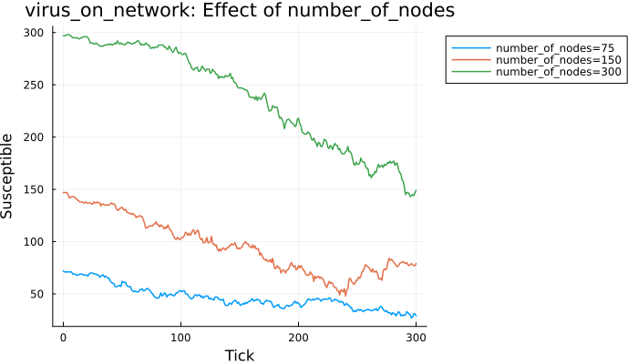

Virus on a Network
Overview
WHAT IS IT?
This model demonstrates the spread of a virus through a network. Although the model is somewhat abstract, one interpretation is that each node represents a computer, and we are modeling the progress of a computer virus (or worm) through this network. Each node may be in one of three states: susceptible, infected, or resistant. In the academic literature such a model is sometimes referred to as an SIR model for epidemics.
HOW IT WORKS
Each time step (tick), each infected node (colored red) attempts to infect all of its neighbors. Susceptible neighbors (colored blue) will be infected with a probability given by the VIRUS-SPREAD-CHANCE slider. This might correspond to the probability that someone on the susceptible system actually executes the infected email attachment. Resistant nodes (colored gray) cannot be infected. This might correspond to up-to-date antivirus software and security patches that make a computer immune to this particular virus.
Infected nodes are not immediately aware that they are infected. Only every so often (determined by the VIRUS-CHECK-FREQUENCY slider) do the nodes check whether they are infected by a virus. This might correspond to a regularly scheduled virus-scan procedure, or simply a human noticing something fishy about how the computer is behaving. When the virus has been detected, there is a probability that the virus will be removed (determined by the RECOVERY-CHANCE slider).
If a node does recover, there is some probability that it will become resistant to this virus in the future (given by the GAIN-RESISTANCE-CHANCE slider).
When a node becomes resistant, the links between it and its neighbors are darkened, since they are no longer possible vectors for spreading the virus.
THINGS TO NOTICE
At the end of the run, after the virus has died out, some nodes are still susceptible, while others have become immune. What is the ratio of the number of immune nodes to the number of susceptible nodes? How is this affected by changing the AVERAGE-NODE-DEGREE of the network?
THINGS TO TRY
Set GAIN-RESISTANCE-CHANCE to 0%. Under what conditions will the virus still die out? How long does it take? What conditions are required for the virus to live? If the RECOVERY-CHANCE is bigger than 0, even if the VIRUS-SPREAD-CHANCE is high, do you think that if you could run the model forever, the virus could stay alive?
EXTENDING THE MODEL
The real computer networks on which viruses spread are generally not based on spatial proximity, like the networks found in this model. Real computer networks are more often found to exhibit a “scale-free” link-degree distribution, somewhat similar to networks created using the Preferential Attachment model. Try experimenting with various alternative network structures, and see how the behavior of the virus differs.
Suppose the virus is spreading by emailing itself out to everyone in the computer’s address book. Since being in someone’s address book is not a symmetric relationship, change this model to use directed links instead of undirected links.
Can you model multiple viruses at the same time? How would they interact? Sometimes if a computer has a piece of malware installed, it is more vulnerable to being infected by more malware.
Try making a model similar to this one, but where the virus has the ability to mutate itself. Such self-modifying viruses are a considerable threat to computer security, since traditional methods of virus signature identification may not work against them. In your model, nodes that become immune may be reinfected if the virus has mutated to become significantly different than the variant that originally infected the node.
RELATED MODELS
Virus, Disease, Preferential Attachment, Diffusion on a Directed Network
NETLOGO FEATURES
Links are used for modeling the network. The layout-spring primitive is used to position the nodes and links such that the structure of the network is visually clear.
Though it is not used in this model, there exists a network extension for NetLogo that you can download at: https://github.com/NetLogo/NW-Extension.
HOW TO CITE
If you mention this model or the NetLogo software in a publication, we ask that you include the citations below.
For the model itself:
- Stonedahl, F. and Wilensky, U. (2008). NetLogo Virus on a Network model. http://ccl.northwestern.edu/netlogo/models/VirusonaNetwork. Center for Connected Learning and Computer-Based Modeling, Northwestern University, Evanston, IL.
Please cite the NetLogo software as:
- Wilensky, U. (1999). NetLogo. http://ccl.northwestern.edu/netlogo/. Center for Connected Learning and Computer-Based Modeling, Northwestern University, Evanston, IL.
COPYRIGHT AND LICENSE
Copyright 2008 Uri Wilensky.

This model is licensed under the Creative Commons Attribution-NonCommercial-ShareAlike 3.0 License. To view a copy of this license, visit https://creativecommons.org/licenses/by-nc-sa/3.0/ or send a letter to Creative Commons, 559 Nathan Abbott Way, Stanford, California 94305, USA.
NetLogo itself is free software for non-commercial use under the terms of the GNU General Public License (see full license information here).
To inquire about commercial licenses for either NetLogo or specific models from the models library, please contact netlogo-commercial-admin@ccl.northwestern.edu.
Parameters
| Parameter | Type | Default | Description |
|---|---|---|---|
number_of_nodes | Int | 150 | number of nodes |
average_node_degree | Int | 6 | average node degree |
initial_outbreak_size | Int | 3 | initial outbreak size |
virus_spread_chance | Float64 | 2.5 | percent |
virus_check_frequency | Int | 1 | ticks |
recovery_chance | Float64 | 5.0 | percent |
gain_resistance_chance | Float64 | 5.0 | percent |
max_ticks | Int | 300 | max ticks |
Source Code
The Julia code to run this model:
using ArkModelZoo
_, trajectory = run_virus_on_network()Time Series

Ensemble Runs
Ten replicates with different random seeds, showing mean ± standard deviation.

Parameter Sensitivity
Varying number_of_nodes.

Appendix: Source Code
This model is implemented in the Ark.jl Entity-Component-System (ECS) framework. The code is split into five files, each with a distinct role:
- Parameters: a mutable struct holding all configurable values.
- Components: lightweight data types attached to individual entities (agents).
- Resources: world-level shared state accessible to all systems.
- Systems: functions that operate on entities each tick, defining model behavior.
- Model: wiring that assembles the world, registers resources and systems, and provides the run entry point.
Parameters (parameters.jl)
The parameter struct uses @kwdef so that every field has a default value and can be overridden by keyword. These defaults match the original NetLogo model’s slider settings.
Base.@kwdef mutable struct VONParams
number_of_nodes::Int = 150
average_node_degree::Int = 6
initial_outbreak_size::Int = 3
virus_spread_chance::Float64 = 2.5 # percent
virus_check_frequency::Int = 1 # ticks
recovery_chance::Float64 = 5.0 # percent
gain_resistance_chance::Float64 = 5.0 # percent
max_ticks::Int = 300
seed::Int = 42
endComponents (components.jl)
Components are lightweight data types attached to individual entities (agents). Mutable structs hold per-entity state, while empty tag structs act as markers for the ECS query system to efficiently filter entities.
mutable struct VONState
node_id::Int
infected::Bool
resistant::Bool
virus_check_timer::Int
end
VONState() = VONState(0, false, false, 0)Resources (resources.jl)
Resources are world-level singletons shared across all systems, used for global state and aggregate statistics.
mutable struct VONNetwork
graph::NwGraph
node_to_entity::Vector{Entity}
end
VONNetwork() = VONNetwork(NwGraph(), Entity[])
mutable struct VONStats
num_susceptible::Int
num_infected::Int
num_resistant::Int
end
VONStats() = VONStats(0, 0, 0)Systems (systems.jl)
Systems contain the model logic and execute in a defined order each tick. Each system struct implements either initialize! (run once at setup) or update! (run every tick).
struct InitVONSystem <: System end
function initialize!(::InitVONSystem, world::World)
params = get_resource(world, VONParams)
rng = get_resource(world, RNGResource).rng
net = get_resource(world, VONNetwork)
n = params.number_of_nodes
# Build spatially-clustered network: connect nearest non-neighbors
num_links = div(params.average_node_degree * n, 2)
g = NwGraph(n)
# Assign random positions for spatial clustering
pos_x = [rand(rng) for _ in 1:n]
pos_y = [rand(rng) for _ in 1:n]
for _ in 1:num_links
# Pick random node, connect to nearest non-neighbor
i = rand(rng, 1:n)
best_j = 0
best_dist = Inf
for j in 1:n
j == i && continue
nw_has_edge(g, i, j) && continue
d = (pos_x[i] - pos_x[j])^2 + (pos_y[i] - pos_y[j])^2
if d < best_dist
best_dist = d
best_j = j
end
end
if best_j > 0
nw_add_edge!(g, i, best_j)
end
end
net.graph = g
# Create entities for each node
net.node_to_entity = Vector{Entity}(undef, n)
for i in 1:n
timer = rand(rng, 0:max(params.virus_check_frequency - 1, 0))
eid = new_entity!(world, (VONState(i, false, false, timer),))
net.node_to_entity[i] = eid
end
# Infect initial outbreak
outbreak_ids = Random.shuffle!(rng, collect(1:n))[1:min(params.initial_outbreak_size, n)]
for i in outbreak_ids
st = get_components(world, net.node_to_entity[i], (VONState,))[1]
st.infected = true
end
_von_update_stats!(world)
return nothing
end
struct VONGoSystem <: System end
function update!(::VONGoSystem, world::World)
params = get_resource(world, VONParams)
rng = get_resource(world, RNGResource).rng
net = get_resource(world, VONNetwork)
# Increment virus check timers (shuffled ask)
all_nodes = collect(1:net.graph.n)
Random.shuffle!(rng, all_nodes)
for i in all_nodes
st = get_components(world, net.node_to_entity[i], (VONState,))[1]
st.virus_check_timer += 1
if st.virus_check_timer >= params.virus_check_frequency
st.virus_check_timer = 0
end
end
# Spread virus
Random.shuffle!(rng, all_nodes)
for i in all_nodes
st = get_components(world, net.node_to_entity[i], (VONState,))[1]
!st.infected && continue
neighbors = collect(nw_neighbors(net.graph, i))
Random.shuffle!(rng, neighbors)
for j in neighbors
nst = get_components(world, net.node_to_entity[j], (VONState,))[1]
nst.resistant && continue
if rand(rng) * 100.0 < params.virus_spread_chance
nst.infected = true
end
end
end
# Virus checks
Random.shuffle!(rng, all_nodes)
for i in all_nodes
st = get_components(world, net.node_to_entity[i], (VONState,))[1]
(!st.infected || st.virus_check_timer != 0) && continue
if rand(rng, 0:99) < params.recovery_chance
if rand(rng, 0:99) < params.gain_resistance_chance
st.infected = false
st.resistant = true
else
st.infected = false
end
end
end
_von_update_stats!(world)
return nothing
end
function _von_update_stats!(world::World)
stats = get_resource(world, VONStats)
ns = 0; ni = 0; nr = 0
for (_, states) in Query(world, (VONState,))
@inbounds for k in eachindex(states)
s = states[k]
if s.resistant
nr += 1
elseif s.infected
ni += 1
else
ns += 1
end
end
end
stats.num_susceptible = ns
stats.num_infected = ni
stats.num_resistant = nr
end
struct VONTerminationSystem <: System end
function update!(::VONTerminationSystem, world::World)
params = get_resource(world, VONParams)
stats = get_resource(world, VONStats)
tick = get_resource(world, Tick)
if stats.num_infected == 0 || tick.tick + 1 >= params.max_ticks
get_resource(world, Terminate).stop = true
end
return nothing
endModel (model.jl)
The model file assembles all pieces: it creates the ECS World with the required component types, registers resources, builds the Scheduler with systems in execution order, and exposes the public run entry point. The observer pattern records the trajectory each tick.
function von_world(; initial_capacity::Int = 1024)
return World(VONState; initial_capacity = initial_capacity, allow_mutable = true)
end
function von_systems()
return (InitVONSystem(), VONGoSystem(), VONTerminationSystem())
end
function von_model(params::VONParams = VONParams())
world = von_world()
_add_standard_resources!(world, params)
add_resource!(world, VONNetwork())
add_resource!(world, VONStats())
scheduler = Scheduler(world, von_systems())
initialize!(scheduler)
return scheduler
end
struct VONObserver end
function von_headers(::VONObserver)
return ["Susceptible", "Infected", "Resistant"]
end
function von_values(::VONObserver, world::World)
stats = get_resource(world, VONStats)
return Float64[stats.num_susceptible, stats.num_infected, stats.num_resistant]
end
function run_virus_on_network(; params::VONParams = VONParams(), observe::Bool = true)
return _run_model(von_model, VONObserver(), von_values; params, observe)
end